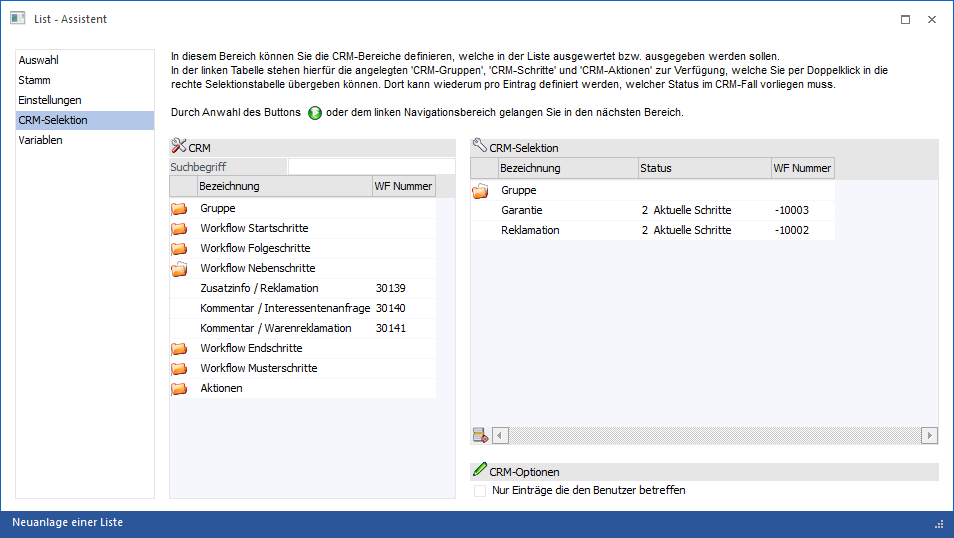
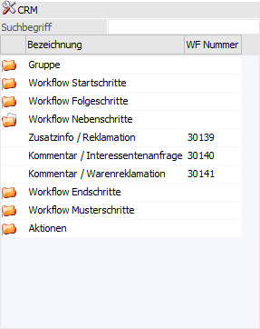
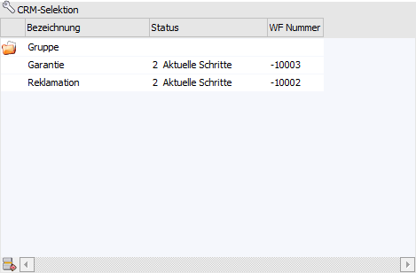
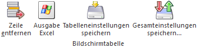
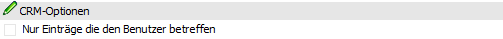

Wenn es sich bei der Liste um eine CRM-Liste handelt (Listtypen "16 - CRM Workflows", "17 - CRM Aktionen" oder "18 - CRM Workflows und Aktionen") dann steht der Bereich "CRM-Selektion" zur Verfügung. Hier kann definiert werden, welche Schritte bzw. Aktionen in der Liste berücksichtigt werden sollen.

Im linken Bereich des Fensters werden die zur Verfügung stehenden CRM-Objekte angezeigt, im rechten Teil jene Objekte, welche bei der Auswertung berücksichtigt werden sollen.
CRM

In der linken Tabelle werden alle für das CRM definierten Workflows und Aktionen angezeigt, wobei diese in folgende Bereiche untergliedert sind:
ü Gruppe
In diesem Bereich werden
alle CRM-Gruppen dargestellt.
ü Workflow Startschritte
In
diesem Bereich werden bei Listen des Typs "16 - CRM Workflows" und "18 - CRM
Workflows und Aktionen" die CRM-Startschritte von Workflows angezeigt.
ü Workflow Folgeschritte
In
diesem Bereich werden bei Listen des Typs "16 - CRM Workflows" und "18 - CRM
Workflows und Aktionen" die CRM-Folgeschritte von Workflows angezeigt. Die
Bezeichnung setzt sich dabei aus dem Namen des Schritts und dem Namen des
jeweiligen Startschritts zusammen.
ü Workflow Nebenschritte
In
diesem Bereich werden bei Listen des Typs "16 - CRM Workflows" und "18 - CRM
Workflows und Aktionen" die CRM-Nebenschritte von Workflows angezeigt. Die
Bezeichnung setzt sich dabei aus dem Namen des Schritts und dem Namen des
jeweiligen Startschritts zusammen.
ü Workflow Endschritte
In diesem
Bereich werden bei Listen des Typs "16 - CRM Workflows" und "18 - CRM Workflows
und Aktionen" die CRM-Endschritte von Workflows angezeigt. Die Bezeichnung setzt
sich dabei aus dem Namen des Schritts und dem Namen des jeweiligen Startschritts
zusammen.
ü Workflow Musterschritte
In
diesem Bereich werden bei Listen des Typs "16 - CRM Workflows" und "18 - CRM
Workflows und Aktionen" die CRM-Musterschritte angezeigt.
Hinweis
Bei Auswahl eines Musterschritts werden in der Liste automatisch alle CRM-Schritte berücksichtigt, welche von dem Musterschritt abgeleitet wurden.
ü Aktionen
In diesem Bereich
werden bei Listen des Typs "17 - CRM Aktionen" und "18 - CRM Workflows und
Aktionen" die CRM-Aktionen angezeigt.
Hinweis
Die Übernahme in die Tabelle "CRM-Selektion" erfolgt per Doppelklick.
Ø Suchbegriff
Neben der manuellen Auswahl kann mit Hilfe des Suchbegriffs schnell und einfach nach den gewünschten CRM-Objekten gesucht werden. Hierfür wird der Begriff eingegeben und bestätigt, wodurch nur mehr jene Objekte angezeigt werden, welche dem gesuchten Suchbegriff entsprechen.
CRM-Selektion

In der rechten Tabelle werden die selektierten Gruppen, Aktionen und Schritte angezeigt.
Achtung
Wenn mehrere Schritte oder Aktionen selektiert werden, so werden diese mit ODER verknüpft. Wenn zusätzlich dazu auch noch Gruppen selektiert werden, dann erfolgt hier die Verknüpfung mit UND.
Ø Bezeichnung
An dieser Stelle wird der Name der Gruppe, der Aktion oder des Schritts angezeigt.
Hinweis
Bei Folge-, Neben- oder Endschritten setzt sich die Bezeichnung aus dem Namen des Schritts und dem Namen des jeweiligen Startschritts zusammen.
Ø Status
An dieser Stelle kann der Status, auf welchen abgefragt werden soll, pro Element definiert werden:
ü 0 - Jeder Schritt
Mit dieser
Option wird der Fall angezeigt, wenn der ausgewählte Schritt irgendwo
vorkommt.
ü 1 - Erster Schritt
Mit dieser
Option wird der Fall nur dann angezeigt, wenn der ausgewählte Schritt der
"Erste" war.
ü 2 - Aktuelle Schritte
Mit
dieser Option wird der Fall nur dann angezeigt, wenn der ausgewählte Schritt der
"Aktuelle" ist.
ü 3 - Erledigte Schritte
Mit
dieser Option wird der Fall nur dann angezeigt, wenn der ausgewählte Schritt
"Erledigt" ist.
Hinweis
Mit Hilfe von CRM-Regeln oder dem CRM-Schritt "Endschritt" können CRM-Fälle als "abgeschlossen" gekennzeichnet werden.
ü 4 - Erledigte und aktuelle
Schritte
Mit dieser Option wird der Fall nur dann angezeigt, wenn der
ausgewählte Schritt der "Aktuelle" oder "Erledigt" ist.
Hinweis
Mit Hilfe von CRM-Regeln oder dem CRM-Schritt "Endschritt" können CRM-Fälle als "abgeschlossen" gekennzeichnet werden.
Tabellenbuttons

Ø Zeile entfernen
Durch Anklicken des Buttons "Zeile entfernen" können nicht mehr benötigte Einträge aus der Tabelle wieder gelöscht werden.
Achtung
Wenn z.B. Workflow Startschritte in die Tabelle übernommen werden, so werden diese mit Überschriften zusammengefasst. Diese Überschriften können nicht aus der Tabelle entfernt werden.
Ø Ausgabe Excel
Durch Anwahl des Buttons "Ausgabe Excel" wird der Inhalt der Tabelle an Microsoft Excel übergeben.
Ø Tabelleneinstellungen speichern
Die Spalten einer Tabelle können grundsätzlich an beliebige Positionen verschoben, bzw. in der Breite entsprechend angepasst werden. Durch Anwahl des Buttons "Tabelleneinstellungen speichern" werden die Einstellungen benutzerspezifisch gespeichert und bei dem nächsten Aufruf des Programmpunktes wieder vorgeschlagen.
Ø Gesamteinstellungen speichern
Im Gegensatz zu "Tabelleneinstellungen speichern" können mit "Gesamteinstellungen speichern" mehrere Tabellenaufbauten gespeichert und nach Wunsch geladen werden. Zusätzlich werden Sonderfunktionen der Tabelle (z.B. "Spalte gruppieren") ebenfalls bei der Speicherung bedacht.
CRM-Optionen

Ø Nur Einträge die den Benutzer betreffen
Wenn diese Checkbox aktiviert wird, dann werden nur die CRM-Fälle angezeigt, die für den Anwender relevant sind. Hierbei findet eine Prüfung auf Basis der Benutzergruppe statt, welche im Workflow-Editor (Register "Gruppenzuordnung") hinterlegt wurden (Fall-Delegationen sind hierbei irrelevant). Somit kann eine Gruppe von Anwendern für einen CRM-Fall zuständig sein, ohne dass dabei eine Delegation an diese erfolgt.